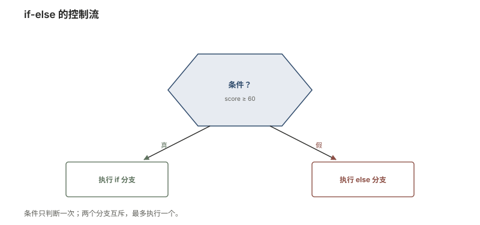

SOE105 · 第 5 章
控制流：顺序与选择
Control Flows: Sequence & Choice
虚线下划线为术语；悬停查看中文、英文与释义，完整词典见“术语”。
本章目录
本讲进入控制流：先区分顺序、选择与重复三种结构，再聚焦选择结构——if、if-else、if-else-if、switch，以及支撑它们的布尔类型、关系运算、短路求值与嵌套 if 的悬垂 else 问题。
本章要点
- 控制流描述执行如何从一条命令走到下一条，只有顺序、选择、重复三种结构。
- 伪代码是一维的步骤描述，流程图是二维的图形描述，两者都属算法层。
- if 的条件为真才执行动作；多条动作必须放进花括号。
- 关系运算符 == 是“等于”，= 是赋值，两者不能混用。
- if-else 提供两路选择；if-else-if 提供多路选择，条件的顺序决定正确性。
- switch 的条件必须是离散值，break 用于跳出，default 处理无匹配的情况。
- bool 只有 true/false；&&、||、! 与位运算 &、| 含义不同。
- 短路求值会跳过后面的子表达式；悬垂 else 归属于最近的 if。
5.1 控制流与三种结构
控制流control flow（flow of control）描述执行如何从一条命令进行到下一条。讲义只承认三种结构：
- 顺序（sequential）：语句按给定次序依次执行；
- 选择（choice，又称条件分支 conditional branch）：根据条件选择要执行的序列；
- 重复（repetition，又称循环 loop 或迭代 iteration）：重复执行某段序列。
三种结构可以互相嵌套：顺序结构里可以放一个 if，if 的动作里可以放一个 while。讲义用“程序结构 1 → 程序结构 2 → 程序结构 3”的串联图说明：任何复杂程序最终都能拆成这三种结构的组合。
这种“只有三种”的限定不是简化，而是结构化程序设计的基石：只要控制流只由这三种结构组成，就可以用“单入口单出口”的方式逐层验证正确性。
L04b–05 p.3, p.6
5.2 描述算法的两种工具
函数/程序内部的算法怎么描述？讲义给出两种工具。
伪代码pseudocode是线性的步骤序列：每一步用高层指令写出“做什么”，精化到刚好够实现即可，但不是真正的程序代码；用基本的控制指令（while、for each、if）表示执行顺序。讲义给了一段图的遍历伪代码作为示例，其中 while、for each、if 直接标出了控制结构。
流程图flowchart是二维图形：方框表示动作与判断，边表示控制流。讲义的基本图形是 Start → step 1 → step 2 → 判断 cond? → 真走 step 3a、假走 step 3b → End。
两者的取舍：伪代码便于书写与修改，接近最终代码；流程图便于看清分支与汇合，尤其适合讲清嵌套条件。考试中若要求“画流程图”，判断框必须有两个出口（T/F），这是最容易漏的地方。
L04b–05 p.4–5
5.3 顺序结构与 if 语句
最简单的选择是基本 if 语句：if (Expression) { Action }。表达式为真时执行动作，为假时跳过。讲义用“下雨就带伞、穿雨衣”作比喻，并强调多条动作要放进花括号：
if (value < 0) {
value = -value;
}完整的求绝对值程序把输入、判断与输出串成顺序结构：读入 value，若小于 0 则取负，最后输出。注意 if 只控制紧随其后的那一条语句（或一个花括号块），后面的 cout 无论条件真假都会执行。
int value;
cout << "Enter integer: ";
cin >> value;
if (value < 0)
value = -value;
cout << "The absolute value is " << value << endl;讲义接着用“两个数排序”的例子展示 if 的典型用法：若 value1 > value2 就交换，否则什么都不做。交换仍要借助 temp，这一点与上一章的赋值规则一致。
if (value1 > value2) { // check whether swapping is necessary
temp = value1;
value1 = value2;
value2 = temp;
}
cout << "The input in sorted order: " << value1 << " " << value2 << endl;L04b–05 p.7–10
5.4 关系运算符与优先级
关系运算符用于比较两个值，结果是真或假：==（等于）、<（小于）、<=（小于等于）、>（大于）、>=（大于等于）、!=（不等于）。讲义特别标注：a = b 表示把 b 的值放进 a，而 a == b 才是比较。把 == 写成 = 是初学者最常见的错误之一，而且往往能通过编译。
关系表达式可以组合算术运算，例如 20 * j == 10 + i、numberOfStudents < 200。此时算术运算先于关系运算。
完整的优先级（从高到低）为：* / % → + - → < <= >= > → == != → =。也就是说，关系运算符低于算术运算符、高于赋值运算符。因此 flag = a < b 会先算 a < b，再把真假值赋给 flag。
| 数学 | C/C++ | 含义 |
|---|---|---|
| = | == | 等于（a = b 是赋值） |
| ≠ | != | 不等于 |
| ≤ | <= | 小于等于 |
| ≥ | >= | 大于等于 |
L04b–05 p.12–14
5.5 if-else 与两路选择
if-else 在两个动作之间二选一：条件为真执行 Action1，为假执行 Action2，两者必居其一。语法为 if (Expression) { Action1 } else { Action2 }。
if (value == 0) {
cout << "value is 0";
} else {
cout << "value is not 0";
}“找较大者”的例子把 if-else 用在赋值上：条件为真把 value1 赋给 larger，否则把 value2 赋给 larger，之后统一输出。这样写比在两个分支里各写一次 cout 更简洁，也更不容易漏掉某个分支。
if (value1 > value2)
larger = value1;
else
larger = value2;
cout << "Larger of inputs is: " << larger << endl;结构上，if-else 是一个“两出口、一汇合”的结构：两条路径最终都汇合到 else 之后的语句。这也解释了为什么在分支里改变量、在分支外使用它，是安全的写法。

绘图提示词
Clean vector flowchart of an if-else statement: a diamond labelled Expression? with a true branch going down to a box labelled Action1 and a false branch going right to a box labelled Action2, both branches converging on a single arrow labelled Continue. Flat 2D, thin 1.5 px strokes, muted slate blue and warm grey palette, white background, English labels, no cartoon, no gradient, no shadow.
L04b–05 p.15–16
5.6 多路选择：成绩等级的例子
讲义用成绩等级贯穿多路选择：70 分及以上为 Distinction，50–70 为 Credit，40–50 为 Pass，低于 40 为 Fail。问题分析给出输入 score（实型）、输出 grade（字符串），已知条件就是这张分数—等级表。
初始算法是“顺着表往下扫，落在哪个区间就设等级并返回”。第一次精化写成四个并列的 if，每个都带完整区间；进一步精化则利用“前面的条件不成立”这一信息，把后面的条件简化为单边比较：
- 若 score ≥ 70，grade = "Distinction"，返回；
- 否则（即 score < 70），若 score ≥ 50，grade = "Credit"，返回；
- 否则（即 score < 50），若 score ≥ 40，grade = "Pass"，返回；
- 否则（即 score < 40），grade = "Fail"。
实现时讲义用整数除法把分数压成十位：int s = score / 10; 再用 if-else-if 链判断 s >= 7、s >= 5、s >= 4，最后 else 兜底。这样每个条件只需一次比较。
int score;
cout << "Enter score: ";
cin >> score;
int s = score / 10;
if (s >= 7)
cout << "Grade: Distinction" << endl;
else if (s >= 5)
cout << "Grade: Credit" << endl;
else if (s >= 4)
cout << "Grade: Pass" << endl;
else
cout << "Grade: Fail" << endl;讲义在这里强调“手工跟踪检查算法的正确性与完备性”（hand trace for correctness and completeness）：条件顺序若写成 s >= 4 在前，所有 40 分以上都会先被判成 Pass，后面的分支永远进不去。
L04b–05 p.17–20
5.7 用断言检查分支条件
讲义在成绩例子上追加了测试设计：用断言assertion检查“进入该分支时条件确实成立”。断言来自 <cassert> 库，形式为 assert(表达式)，表达式为假时程序中止并报错。
#include <cassert>
// ...
if (s >= 7)
cout << "Grade: Distinction" << endl;
else if (s >= 5) {
assert(s >= 5 && s < 7);
cout << "Grade: Credit" << endl;
} else if (s >= 4) {
assert(s >= 4 && s < 5);
cout << "Grade: Pass" << endl;
} else {
assert(s < 4);
cout << "Grade: Fail" << endl;
}三段断言的写法值得注意：在 s >= 5 的分支里，断言写成 s >= 5 && s < 7，把“进入条件”与“上界”同时写出来，等于把 if-else-if 的隐含前提显式化。若某天条件顺序被改坏，断言会立刻失败。
讲义还给出结束测试后的做法：全部测试完成后，加上 #define NDEBUG 关闭 assert()，避免发布版本因断言中止。
L04b–05 p.21
5.8 switch 语句
switch 是另一种多路选择：它把同一个表达式的值与若干离散的 case 值比较，命中哪个就从哪里开始执行。语法为 switch (Expression) { case value1: statements1; break; … default: statementsDefault; }。
与 if-else-if 的关键差别有两点。第一，switch 的条件必须是离散值，不能是范围；if-else-if 的条件可以是范围，也可以是任意布尔表达式。第二，switch 若不写 break，会“继续执行后面的语句”（fall through），直到遇到 break 或 switch 结束。
成绩例子用 switch 重写时，正是利用了 fall through：case 10、9、8、7 共用同一段输出，只在最后写一个 break；case 6、5 共用 Credit；case 4 是 Pass；default 兜底 Fail。这样比写四个 if 更紧凑。
switch (int(score / 10))
{
case 10:
case 9:
case 8:
case 7:
cout << "Grade: Distinction" << endl;
break;
case 6:
case 5:
cout << "Grade: Credit" << endl;
break;
case 4:
cout << "Grade: Pass" << endl;
break;
default:
cout << "Grade: Fail" << endl;
}default 是可选的，作用类似 if-else 的 else：所有 case 都不匹配时执行。讲义在图上标出，若某个 case 后没有 break，控制流会继续落入下一个 case。
Clean vector flowchart of a switch statement: an evaluate Expression box at the top, then a column of case-value tests value1 to valuen, each with a true branch into its own statement box followed by a break, false branches continuing to the next test, a default statement box at the bottom, and dashed arrows labelled fall through from each statement box to the next when break is omitted. Flat 2D, thin 1.5 px strokes, muted slate blue and warm grey palette, white background, English labels, no cartoon, no gradient, no shadow.
L04b–05 p.22–23
5.9 布尔类型、逻辑运算与短路求值
C++ 的 布尔类型bool只有两个值：true（对应非零值）与 false（对应零值）。逻辑运算符有三个：与 &&、或 ||、非 !。讲义特意提醒：& 与 | 也是运算符，但含义不同（按位运算），不能拿来代替 && 与 ||。
bool P = true;
bool Q = false;
bool R = true;
bool S = P && Q; // false
bool T = !Q || R; // true
bool U = !(R && !Q); // false加入逻辑运算后，优先级从高到低为：括号 → 一元 ! → * / % → + - → 关系 < <= >= > → 相等 == != → && → || → 赋值 =。因此 5 != 6 || 7 <= 3 应读作 (5 != 6) || (7 <= 3)。
短路求值short circuit evaluation指：逻辑表达式的值一旦能确定，就停止求值。score < 90 && score >= 80 在 score = 92 时第一个子表达式已为假，后面不再算；cont || exp(x) > x 在 cont 为真时不再调用 exp；x != 0 && y/x > 5.0 在 x = 0 时不会执行除法，从而避免除零。
短路不只是优化，它是写安全条件的手段：把“先决条件”放在左边，把“可能出错的操作”放在右边，是 C/C++ 的惯用写法。
L04b–05 p.24–27
5.10 嵌套 if 与悬垂 else
嵌套指一个完整语句放在另一个语句内部。讲义的例子是“如果今天是周四，且到了上课时间，就去上 SOE105”：外层 if 判断星期，内层 if 判断时间。
嵌套带来悬垂 elsedangling else问题：当 if 套 if 而只有一个 else 时，else 到底属于哪一个 if？讲义的例子是：
int a = -1, b = 1, c = 1;
if (a > 0)
if (b > 0)
c = 2;
else
c = 3;缩进看起来像“else 属于外层 if”，但 C/C++ 的规则是：else 与最近的、尚未配对的 if 结合。所以这里 else 属于内层 if。执行时 a = -1，外层条件为假，整个内层语句都不执行，c 保持 1。
讲义对比了 Python：Python 用缩进定义代码块，因此不存在这种歧义；C/C++ 用花括号，缩进只是给人看的。解决办法是加一对花括号，把意图写清楚：
if (a > 0)
{
if (b > 0)
c = 2;
else // braces avoid dangling else
c = 3;
}L04b–05 p.28–32